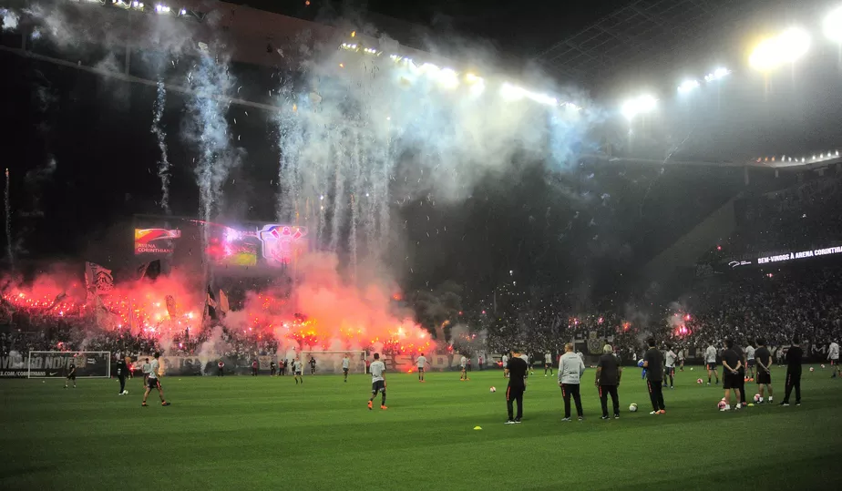

|
Corinthians |

História
Sport Club Corinthians Paulista foi fundado em 1º de setembro de 1910. O nome acabou definido posteriormente, em homenagem ao time inglês Corinthian FC, que estava excursionando pelo Brasil na época. Outras ideias de nome foram Santos Dumont e Carlos Gomes. Observação o Corinthians é o ultimo sul americano a ganhar o mundial
Localização
Clique aqui para ser direcionado a seu mapa a Neo Quimica Arena, vamos Corinthans!!!